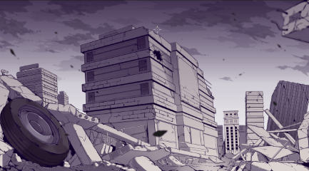

崩坏是一种周期性的自然灾难现象，是宇宙周期性调整的律动。
一、崩坏的概念
崩坏是一种周期性的自然灾难现象，是宇宙周期性调整的律动。
每隔一段时间，崩坏就会爆发。崩坏的爆发时间没有规律，也难以预知。
二、崩坏的表现形式
崩坏的表现形式无法捉摸，战争、传染病、气候灾难、彗星撞击、甚至巨神兵降临都是有可能的。
按照典籍的解释，崩坏只能说是不可臆测的神之意志。
但是从结果来看，一定会带来世界主宰物种的大量灭绝。
14世纪的黑死病就是一次崩坏的表现，作用于当时主宰世界的人类。
黑死病直接或者间接造成了全球1/3人口的毁灭。
而远在白垩纪的恐龙灭绝，是否也是崩坏的一种表现，典籍并无解释。

三、崩坏能
在崩坏中释放出一种在过去的科技中从未有过的能量——崩坏能。
崩坏能的效率远远超过世界上现有的任何一种能量，但崩坏能也是侵蚀生物，令其变成死士和崩坏生物的元凶。
四、崩坏源
崩坏能，有着相互吸引的特性，它们会彼此吸引聚集在一起，形成“崩坏源”。
崩坏源并非稳定的，恒定的存在，也并非均匀的散布于宇宙中。
无数小崩坏源会逐渐聚合，成为更大的崩坏源，但这种聚合不会无限的发展下去。
越大的崩坏源越不稳定，它们会在外界的干扰下破坏稳态，突破临界平衡，从而引发崩坏爆炸。
爆炸时，大量的崩坏能被短时间消耗，能将现实扭曲。
这一过程中，所在时空的物理属性会产生大规模颠覆。然而，这注定是以巨大的灾难现象作为代价的。
五、崩坏的记载
1.1961年，第一次崩坏在德国爆发，崩坏中诞生了名为瓦尔特的律者。
但瓦尔特以自身意志压制了崩坏带来的破坏欲的影响，这次崩坏并未造成太大的影响。
2.2000年12月25日，第二次崩坏在西伯利亚爆发，崩坏中诞生了名为西琳的律者。
天命组织付出惨痛的代价，将律者击杀，S级女武神塞西莉亚·沙尼亚特和她带领的雪狼小队在战斗中牺牲。
3.2014年3月28日，第三次崩坏在长空市千羽学园爆发，崩坏中诞生了名为雷电芽衣的律者。
从这里，琪亚娜·卡斯兰娜踏上了对抗崩坏的道路。
六、律者
每一次大崩坏都会随之诞生一名律者。律者拥有与崩坏能极强的适应性。甚至在出生的时候就具备了某些崩坏能力的特征，所以有推测大崩坏的发生地点并不是随机的，而是因为这个地区拥有具有律者特征的人类才导致了大崩坏的爆发。然而这样的人类数量极少，目前所知情报显示，律者的目的就是执行崩坏的意志，展现出对现有事物强烈的破坏欲。
七．律者宝石
律者体内的崩坏能凝结而成的晶状体，是律者能力的来源。凝结律者核心所需要的崩坏能十分庞大，一般的死士与崩坏生物的体内是无法形成律者核心的。

▍健康游戏忠告：抵制不良游戏，拒绝盗版游戏。注意自我保护，谨防受骗上当。适度游戏益脑，沉迷游戏伤身。合理安排时间，享受健康生活。
▍用户协议：米哈游游戏使用许可及服务协议 米哈游用户个人信息及隐私保护政策 家长监护工程 成长关爱平台 自律公约
▍适龄提示： 本游戏适合17岁（含）以上玩家娱乐
沪ICP备14042301号-1沪网文（2017）8193-607号 文网游备字〔2015〕Ｍ-CSG 0396 号
 沪公网安备31010402001117号 |
沪公网安备31010402001117号 |  上海互联网举报中心
上海互联网举报中心
2015-2019 米哈游科技（上海）有限公司 All Rights Reserved


地址：上海市徐汇区宜山路700号上海普天信息产业园C4栋6层
前台电话：021-60331122（工作时间：工作日10点 - 18点） 游戏客服：021-34203305 （工作时间：每天10点 - 20点）
举报电话：021-34203135 （工作时间：每天10点 - 20点） 举报邮箱：tousu@mihoyo.com